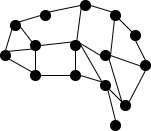

PARACOMET: Paragraph-level Commonsense Transformers
Can NLP systems explicitly generate commonsense inferences, that a human might implicitly make while reading a narrative?
In this work, we explore a longstanding AI research challenge of machine reasoning over narratives. We see if neural models are able to correctly reason about how people might behave or what they might feel in certain situations. For example, given a story "Ella had a high water bill. She walked around the property.," human readers might assume that Ella wanted to fix a pipe or find a leak. However, this kind of reasoning is still beyond current neural commonsense models that function on a phrase- or event-level. We introduce distantly-supervised Paragraph-Level Commonsense Transformers, which are able to use Semantic Knowledge (world knowledge and culturally specific stereotypes/norms captured by pretrained models) and Episodic Knowledge (knowledge of prior narrative events and commonsense predictions) to generate commonsense inferences with narrative-level coherence. This allows us to build narrative-level commonsense knowledge graphs that shed light on social implications underlying short stories and personal web blogs.
What's Next?
Our work reveals that commonsense inference over narratives is a challenging benchmark for measuring the reasoning ability of neural models (we find that up to 23% of model predicted inferences are still implausible, even when considering our discourse-aware commonsense models). To encourage further research, we develop a general purpose distant supervision framework that efficently aligns commonsense from the ATOMIC knowledge graph with narratives, as well as an evaluation set of human-validated narrative-level commonsense inferences.
Feel free to send questions to skgabrie@cs.washington.edu.
Citation:
Saadia Gabriel, Chandra Bhagavatula, Vered Shwartz, Ronan Le Bras, Maxwell Forbes, Yejin Choi (2021).
Paragraph-level Commonsense Transformers with Recurrent Memory. Proceedings of the 35th AAAI Conference on Artificial Intelligence.
Bibtex:
@inproceedings{Gabriel2021ParagraphLevelCT,
title={Paragraph-level Commonsense Transformers with Recurrent Memory},
author={Gabriel, Saadia and Bhagavatula, Chandra and Shwartz, Vered and Le Bras, Ronan and Forbes, Maxwell and Choi, Yejin},
booktitle={AAAI},
year={2021},
}